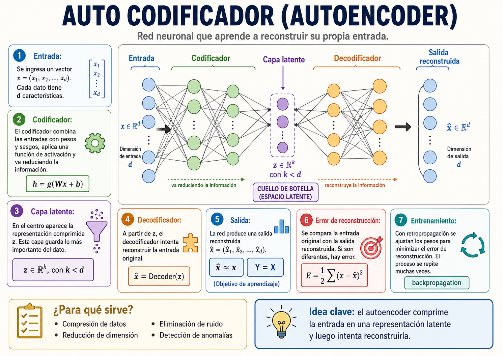
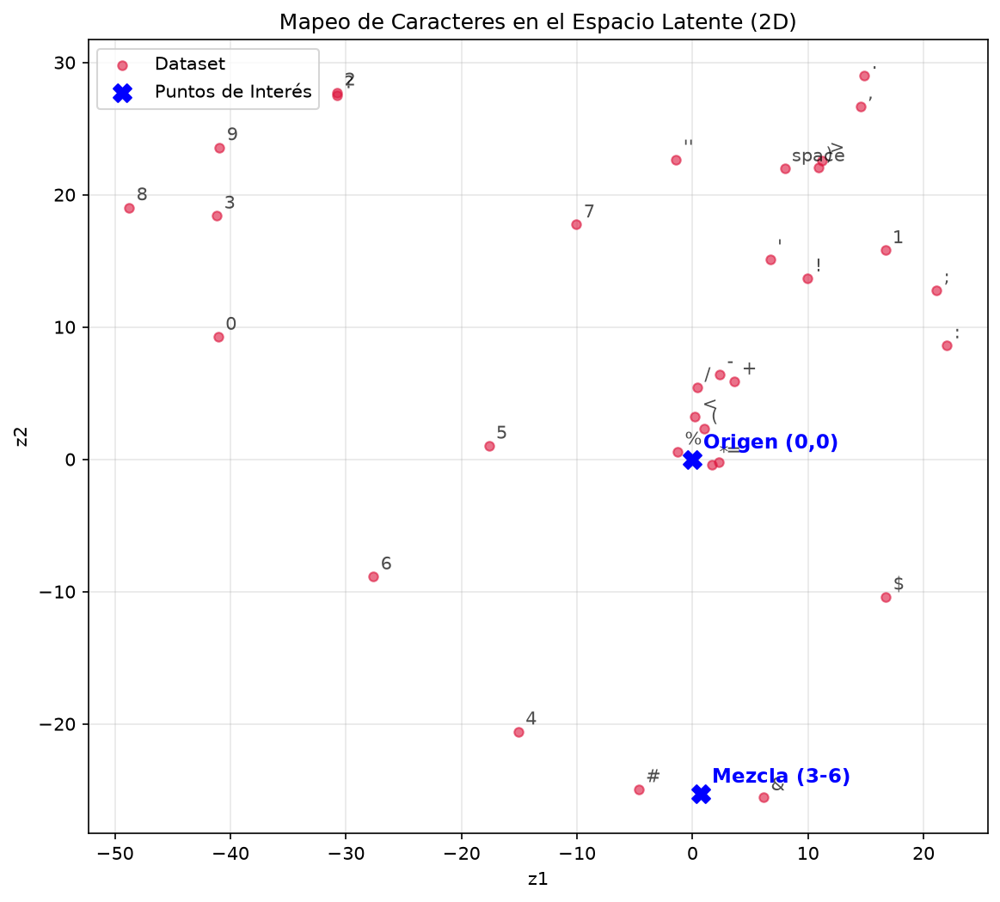
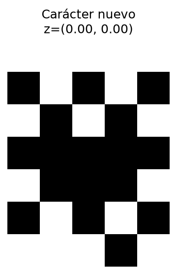
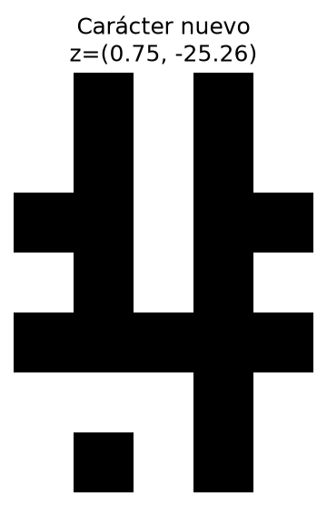
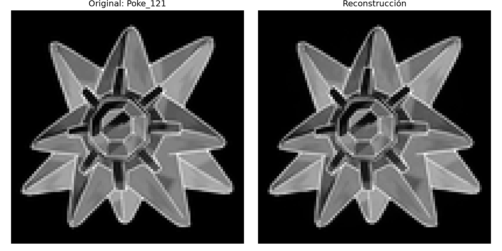
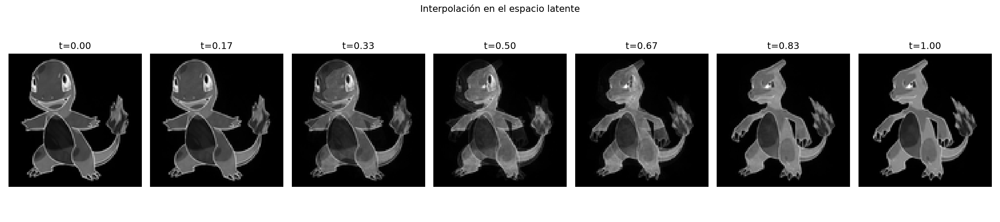

Una red que aprende a copiarse a sí misma, pasando por un cuello de botella — y de ahí sale algo nuevo. Los 3 puntos del TP3, paso a paso.
Es una red que aprende a reconstruir su propia entrada. Le das un dato y tiene que devolver ese mismo dato… pero obligándola a pasar antes por un cuello de botella.
Tiene dos mitades. El codificador comprime el dato a unos pocos números (el espacio latente). El decodificador toma esos números y trata de volver al dato original. Como en el medio hay muchísima menos información, la red está forzada a quedarse sólo con lo importante. Aprender = lograr que la copia se parezca al original.

El codificador agarra el dato entero (35 píxeles de un carácter) y lo va apretando capa a capa hasta dejarlo en sólo 2 números (z₁, z₂).
🎒 Como armar una mochila chica para un viaje: no entra todo, así que tenés que decidir qué es lo realmente importante y dejar el resto. Eso que sí entra es la representación latente.
El decodificador hace el camino inverso: toma esos 2 números y trata de redibujar el carácter completo de 35 píxeles.
🧩 Como reconstruir un recuerdo: con unas pocas pistas (“era una letra con dos rayas verticales”) tu cabeza vuelve a armar la imagen entera. Si la red guardó buenas pistas, la copia sale casi idéntica.
Comprime la entrada de d valores a k valores (con k < d). Ese es el cuello de botella.
El dato vive comprimido en pocas dimensiones. Acá k=2, así lo podemos dibujar en un plano.
Reconstruye el dato a partir de z. El objetivo es que x̂ ≈ x.
Cuánto se diferencia la copia del original. Se entrena con backpropagation para que baje. Es el MSE.
Cada carácter es una imagen binaria de 7×5 = 35 píxeles. La consigna pide que el espacio latente sea de 2 dimensiones, así que armamos una red con forma de reloj de arena: 35 → 17 → 2 → 17 → 35. El 2 del medio no es casualidad: es lo que después nos deja graficar todos los caracteres en un plano.
17 (ReLU) → capa latente de 2 (lineal).17 (ReLU) → salida de 35.binary_crossentropy) necesita salidas entre 0 y 1, así que no se lleva con tanh.🎯 MSE, con un ejemplo: pensá que cada píxel que la red reconstruye es un dardo que tira a un blanco, y el centro es el valor que ese píxel tenía en el original. MSE mide qué tan mal le fue: agarra la distancia de cada dardo al centro, la eleva al cuadrado y promedia todas. ¿Por qué al cuadrado? Porque así un error chico (te pasaste por un pelito) casi ni suma, pero uno grande (le erraste feo) pesa muchísimo más. Resultado: a la red le conviene, sobre todo, no mandarse ningún error grande — que ningún píxel quede MUY lejos de lo que tenía que ser.
🏔️ Adam, con un ejemplo: entrenar es buscar la combinación de pesos que da el menor error posible. Imaginátelo como estar en un cerro con mucha neblina queriendo llegar al punto más bajo del valle, pero sin ver más allá de tus pies: lo único que sentís es la inclinación del piso. El optimizador es la regla para decidir el próximo paso, y Adam es uno inteligente. (1) Da pasos largos cuando la bajada es clara y los acorta cuando el terreno se aplana (ya estás cerca del fondo), para no pasarse y quedar rebotando. (2) Tiene memoria de hacia dónde venías bajando, así no zigzaguea ante cada bache. Por eso llega rápido y estable sin que le digas a mano cuánto avanzar en cada paso.
# ENCODER: 35 -> 17 -> 2
inputs = layers.Input(shape=(35,))
x = layers.Dense(17, activation="relu")(inputs)
latente = layers.Dense(2, activation="linear")(x)
encoder = Model(inputs, latente)
# DECODER: 2 -> 17 -> 35
d_in = layers.Input(shape=(2,))
x = layers.Dense(17, activation="relu")(d_in)
out = layers.Dense(35, activation="tanh")(x)
decoder = Model(d_in, out)
# AUTOENCODER = encoder + decoder
ae = Model(inputs, decoder(encoder(inputs)))
ae.compile(optimizer="adam", loss="mse"){0,1} a {−1,1}. El umbral para volver a blanco/negro pasa a ser 0.0. Esta combinación (tanh + lineal + MSE) fue la que mejor reconstruyó.
No salió a la primera. La consigna pide justamente estudiar y describir las arquitecturas y parámetros que fuimos probando. Fuimos cambiando la activación de salida, la del latente, la función de pérdida y la cantidad de capas, mirando el val_loss (el error sobre datos que no entrenó).
| # | Capas ocultas | Salida | Latente | Pérdida | Optim. | loss | val_loss |
|---|---|---|---|---|---|---|---|
| 1 | relu (17) | sigmoid | relu | binary_crossentropy | adam | 0.1499 | 2.6223 |
| 2 | relu (17) | sigmoid | linear | binary_crossentropy | adam | 0.0589 | 1.9343 |
| 3 elegida | relu (17) | tanh | linear | mse | adam | 0.0733 | 0.4884 |
| 4 | relu (24, 12) | tanh | linear | mse | adam | 0.0731 | 0.9571 |
| 5 | relu (24, 12) · denoising | tanh | linear | mse | adam | 0.1427 | 0.9485 |
Qué aprendimos de la tabla: con sigmoid + binary_crossentropy (pruebas 1 y 2) el error sobre datos nuevos quedaba altísimo (val_loss > 1.9). Al pasar a tanh + MSE y latente lineal (prueba 3) el val_loss se desplomó a 0.49: fue la mejor de todas. Sumar una segunda capa (prueba 4) no mejoró, así que nos quedamos con la arquitectura más simple que funcionaba. La prueba 5 es la base del Punto 2 (ruido).
¿Por qué el val_loss (0.49) es bastante más alto que el loss (0.07)? No es overfitting: es por el tamaño del set. Entrenamos con validation_split=0.1 sobre 32 caracteres, así que validamos contra apenas 3 caracteres sueltos al azar — con tan pocas muestras el número sale alto y ruidoso por construcción. Además, un autoencoder sobre un conjunto finito y fijo está pensado para comprimir bien ese conjunto, no para generalizar a datos nuevos. Por eso miramos el val_loss como guía relativa para comparar las 5 configuraciones entre sí, no como una medida absoluta de error.
Entrenamos el autoencoder con los 32 caracteres del archivo caracteres.h (el set Font1: espacio, símbolos y dígitos 0–9), cada uno una imagen binaria de 7×5. La red tiene que aprender a reconstruir cada carácter pasando por el cuello de 2 dimensiones.
Después de entrenar, le pedimos a la red que reconstruya cada carácter. La copia x̂ sale prácticamente idéntica al original x: la red logró comprimir a 2 números y recuperar la imagen casi sin perder nada.
Original (negro) vs. reconstrucción de la red. Ejemplos sacados de la verificación que imprime part_1.py.

Pasamos cada carácter por el codificador y dibujamos sus 2 coordenadas. Lo interesante es que la red, sin que se lo pidamos, agrupa los caracteres parecidos cerca entre sí:
. , ; : + -) se amontonan en el centro, porque comparten casi todos los píxeles en blanco.Que el espacio quede así de ordenado es la señal de que la red entendió la estructura de los datos, no que los memorizó sueltos.
Como el espacio latente es continuo, entre dos caracteres conocidos hay infinitos puntos válidos. Si elegimos un punto cualquiera (o uno justo en el medio de dos) y lo metemos sólo en el decodificador, la red genera un carácter que nunca vio. Eso es crear algo nuevo a partir de lo aprendido.


Armamos un codificador y un decodificador con cuello de botella de 2D, los entrenamos sobre los 32 caracteres y la red reconstruye casi perfecto. Graficamos los datos en el espacio latente (quedan ordenados por parecido) y mostramos que el decodificador puede generar caracteres nuevos eligiendo puntos del plano que no corresponden a ningún carácter original. Los 4 sub-ítems de la consigna, cubiertos.
Sobre el mismo conjunto de caracteres armamos una variante que funcione como eliminador de ruido. La idea es simple pero potente: en vez de mostrarle a la red el carácter limpio en la entrada, le mostramos el carácter ensuciado… pero le pedimos que devuelva el limpio.
Mantuvimos la misma forma de reloj de arena, pero con un poco más de capacidad: 2 capas ocultas (24 y 12) en cada mitad, salida tanh y pérdida MSE.
# da vuelta cada píxel con probabilidad "prob"
def agregar_ruido(bits, prob=0.02):
ruidoso = []
for i in range(len(bits)):
if random() < prob:
ruidoso.append(1 - bits[i]) # lo invierte
else:
ruidoso.append(bits[i]) # lo deja igual
return ruidoso
# subiendo "prob" ensuciamos más la entrada
# y probamos cuánto aguanta limpiando la redCon poco ruido, la red reconstruye el carácter limpio casi perfecto: aprendió a ignorar los píxeles equivocados. A más ruido, el val_loss sube (≈0.95 frente a 0.49 del autoencoder común): el problema es más difícil y empiezan a aparecer errores en caracteres muy parecidos entre sí. La conclusión es clara: el denoising autoencoder no memoriza píxel por píxel, aprende la "idea" del carácter, y por eso puede reconstruirlo aunque la entrada venga sucia.
Para el punto libre elegimos un problema más divertido: imágenes de Pokémon. La idea es la misma del autoencoder, pero llevada a imágenes de verdad — comprimir una imagen a unos pocos números y reconstruirla, para después poder generar variaciones.


Pasar de 10.000 píxeles a sólo 64 números y volver a una imagen reconocible demuestra el poder de la compresión latente. La reconstrucción sale borrosa porque, aun con 5000 épocas, 64 dimensiones para 151 Pokémon distintos es un cuello muy apretado — pero la silueta está. Y al movernos por ese espacio latente de 64D generamos Pokémon "nuevos", mezcla de los que la red aprendió, igual que mezclábamos caracteres en el Punto 1. El mismo principio, a otra escala.
Con sigmoid + binary_crossentropy el error sobre datos nuevos era altísimo (val_loss > 1.9). Recién con tanh + MSE + latente lineal la red empezó a converger bien.
Como la salida es tanh (−1 a 1), hubo que escalar las imágenes de {0,1} a {−1,1} y ajustar el umbral a 0.0 para volver a blanco y negro.
Comprimir a sólo 2 números pierde información: símbolos muy parecidos caen casi en el mismo punto del plano y a veces se confunden.
10.000 píxeles de entrada pesan mucho: hubo que sumar capas y BatchNormalization, y aun así —incluso con 5000 épocas— la reconstrucción queda borrosa por lo apretado del cuello de 64D para 151 Pokémon distintos.
Si te perdés con alguna palabra, acá está cada una explicada como si se la contaras a un amigo que nunca escuchó del tema.
Red que aprende a reconstruir su propia entrada pasando por un cuello de botella.
La mitad que comprime el dato a pocos números.
La mitad que reconstruye el dato a partir de esos pocos números.
La versión comprimida del dato. Acá son 2 números (z₁, z₂) que se pueden dibujar.
La capa más chica del medio. Obliga a la red a quedarse sólo con lo importante.
La copia que devuelve la red. El objetivo es que se parezca al original.
Cuánto difiere la copia del original. Se mide con MSE y se busca minimizarlo.
Error cuadrático medio: promedio de las diferencias al cuadrado entre x y x̂.
Variante que entrena con la entrada sucia y la salida limpia: aprende a quitar ruido.
El error sobre datos que la red NO usó para entrenar. Mide si generaliza.
tanh aplasta la salida a (−1, 1); lineal la deja pasar tal cual. Las usamos en latente y salida.
Elegir un punto del espacio latente que no es de ningún dato y decodificarlo: sale algo nuevo.
Para forzar a la red a comprimir. Si la capa del medio fuera igual de grande que la entrada, la red copiaría todo sin aprender nada. Al achicarla, tiene que descartar lo que sobra y quedarse con lo esencial.
El espacio latente es continuo: entre dos caracteres hay infinitos puntos. Elegimos un punto que no es de ningún carácter (por ejemplo el del medio entre dos) y lo metemos sólo en el decodificador. Lo que sale es inédito.
En el autoencoder común entrada y salida deseada son lo mismo. En el denoising, la entrada va con ruido pero la salida deseada es la limpia. Eso obliga a la red a aprender a reparar, no sólo a copiar.
Lo probamos: con sigmoid + binary_crossentropy el val_loss quedaba arriba de 1.9. Con tanh + MSE y latente lineal bajó a 0.49. Fue una decisión empírica, mirando qué configuración reconstruía mejor.
Porque la activación de salida se elige según el rango en que escalás los datos. En caracteres escalamos a −1 a 1 → tanh; en Pokémon dejamos los píxeles en 0 a 1 → sigmoid. En los dos casos la pérdida es la misma, MSE.
No es un autoencoder variacional (VAE), así que el espacio latente no está regularizado: un punto cualquiera puede dar basura. Por eso generamos en puntos intermedios entre datos conocidos (y por interpolación en Pokémon), que es donde el espacio está bien poblado y decodifica limpio.
Pasar de 35 píxeles a 2 números y volver obliga a la red a quedarse con lo esencial. El cuello de botella es lo que hace que aprenda estructura, no copia.
Sin pedírselo, la red ubicó los caracteres parecidos cerca entre sí. Ese orden es la prueba de que entendió los datos.
Decodificando puntos que no son de ningún dato, la red crea caracteres (y Pokémon) inéditos. Mismo principio a cualquier escala.
Entrenando con entradas sucias y salidas limpias, el autoencoder aprende a reparar. La activación y la pérdida correctas fueron clave para que todo convergiera.
Las dos mitades: una comprime, la otra reconstruye.
La representación comprimida del dato.
La capa más chica que fuerza la compresión.
Diferencia entre el original y la copia (MSE).
Variante que aprende a limpiar ruido.
Decodificar puntos nuevos del latente.